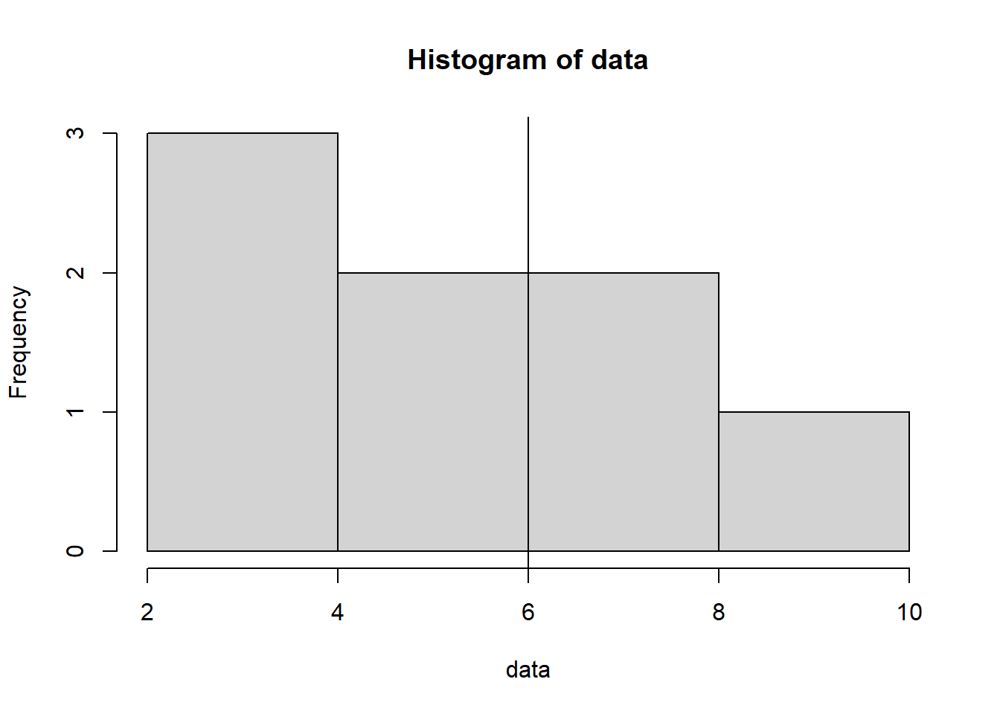
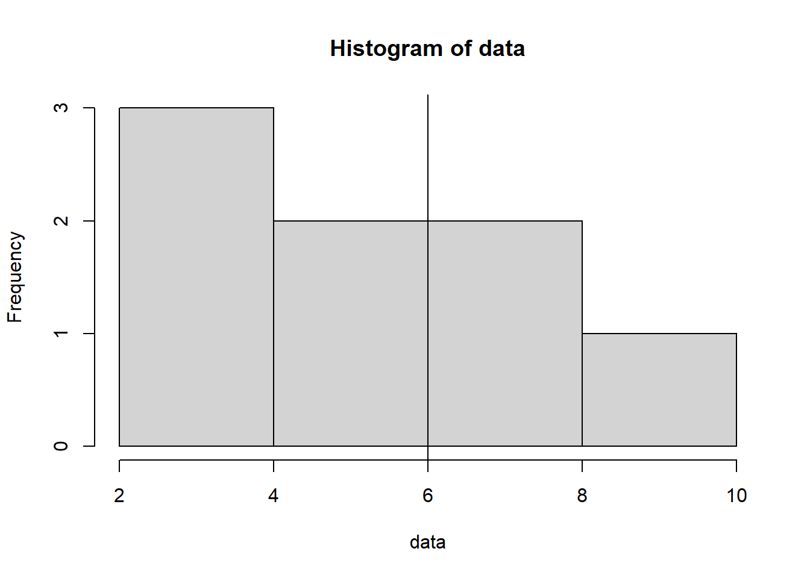
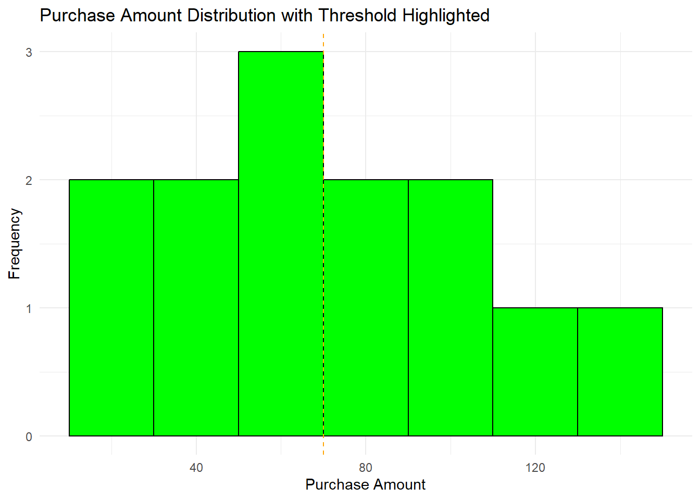

# Create a vector of data
data <- c(5, 7, 3, 9, 2, 6, 4, 8)
# Create a histogram to visualize the distribution of data
hist(data)
# Add a vertical line at x = 6
abline(v = 6)
Are you tired of looking at plain, vanilla histograms that just show the distribution of your data without any additional context? If so, you’re in for a treat! In this blog post, we’ll explore a simple yet powerful technique to take your histograms to the next level by adding vertical lines that provide valuable insights into your data. We’ll use R, a popular programming language for data analysis and visualization, to demonstrate how to achieve this step by step. Don’t worry if you’re new to R or programming – we’ll break down each code block in easy-to-understand terms.
Histograms are great for visualizing the distribution of your data, but sometimes, it’s important to highlight specific values or thresholds within that distribution. Adding vertical lines can help you achieve this, allowing you to mark important points on the histogram. This is especially useful when you’re dealing with data that has significant features, such as a mean or a critical threshold.
Before we dive into the examples, make sure you have R installed on your machine. You can download it from https://cran.r-project.org/. Once you’re all set, fire up your favorite R environment or IDE, and let’s begin!
To add a solid vertical line at a specific location in a histogram, we can use the abline() function in R. Here’s an example:
# Create a vector of data
data <- c(5, 7, 3, 9, 2, 6, 4, 8)
# Create a histogram to visualize the distribution of data
hist(data)
# Add a vertical line at x = 6
abline(v = 6)
Explanation:
If you want to add a customized vertical line with different colors, line widths, or line types, you can modify the abline() function. Here’s an example:
# Create a vector of data
data <- c(5, 7, 3, 9, 2, 6, 4, 8)
# Create a histogram to visualize the distribution of data
hist(data)
# Add a vertical line at the mean value of the data with a red dashed line
abline(v = mean(data), col = 'red', lwd = 2, lty = 'dashed')
Explanation:
In some cases, you may want to add multiple customized vertical lines to a histogram. Here’s an example:
# Create a vector of data
data <- c(5, 7, 3, 9, 2, 6, 4, 8)
# Create a histogram to visualize the distribution of data
hist(data)
# Add multiple vertical lines at specific locations with different colors
abline(v = c(4, 6, 8), col = c('red', 'blue', 'green'), lwd = 2, lty = 'dashed')
Explanation:
Let’s start with a simple scenario: you have a dataset of exam scores and you want to visualize the distribution while highlighting the mean score. Here’s how you can do it:
# Load necessary libraries
library(ggplot2)
# Create a sample dataset
data <- data.frame(x = c(65, 72, 78, 85, 90, 92, 95, 98, 100))
# Create a histogram with a vertical line for the mean
ggplot(data=data, aes(x=x)) +
geom_histogram(binwidth=5, fill="blue", color="black") +
geom_vline(aes(xintercept=mean(data)), color="red", linetype="dashed") +
labs(title="Exam Scores Distribution with Mean Highlighted", x="Scores", y="Frequency") +
theme_minimal()Warning in mean.default(data): argument is not numeric or logical: returning NAWarning: Removed 9 rows containing missing values (`geom_vline()`).
In this example, we used the ggplot2 library to create a histogram. The geom_vline function adds a vertical line at the position of the mean score. The xintercept argument specifies the position of the line, and we used the color and linetype arguments to style the line.
Now, let’s say you’re analyzing customer purchase data and you want to see how many customers made purchases above a certain threshold. You can add a vertical line to indicate this threshold:
# Create a sample dataset
purchase_amounts <- data.frame(x= c(20, 30, 45, 50, 55, 60, 70, 80, 90, 100, 110, 130, 150))
# Create a histogram with a vertical line for the threshold
threshold <- 70
ggplot(data=data.frame(amount=purchase_amounts), aes(x=x)) +
geom_histogram(binwidth=20, fill="green", color="black") +
geom_vline(xintercept=threshold, color="orange", linetype="dashed") +
labs(title="Purchase Amount Distribution with Threshold Highlighted", x="Purchase Amount", y="Frequency") +
theme_minimal()
In this example, we directly specified the threshold value using the threshold variable. The vertical line is added to the histogram at that threshold value.
Adding vertical lines to histograms in R is a straightforward way to enhance your data visualization. By highlighting specific values or thresholds, you can convey more information to your audience and make your insights clearer. Don’t hesitate to experiment with different datasets, color schemes, and line styles to match your needs and preferences.
So, what are you waiting for? Open up R, load your data, and start creating histograms with vertical lines to uncover hidden patterns and insights that may have gone unnoticed. Happy coding and visualizing!
Remember, practice makes perfect. The more you experiment with these concepts, the more proficient you’ll become at crafting compelling visualizations. Have fun exploring your data in a new light!